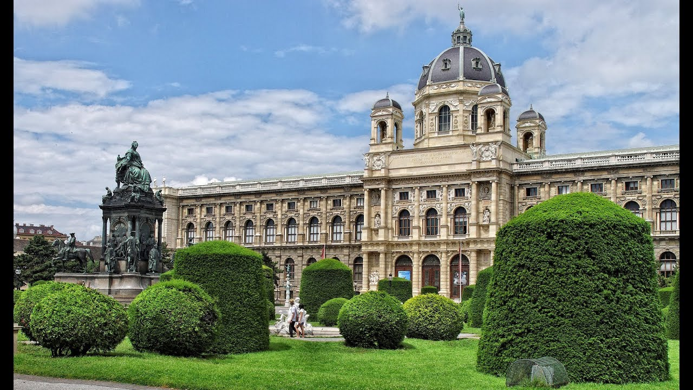
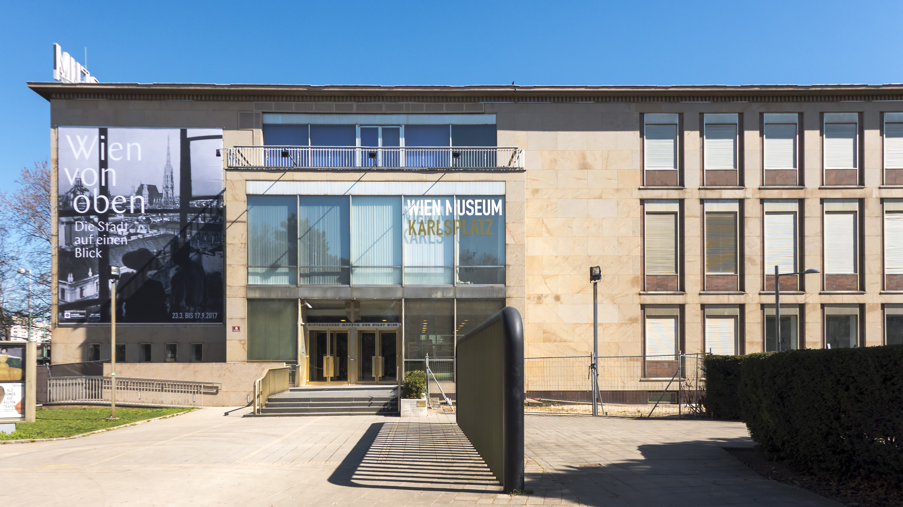
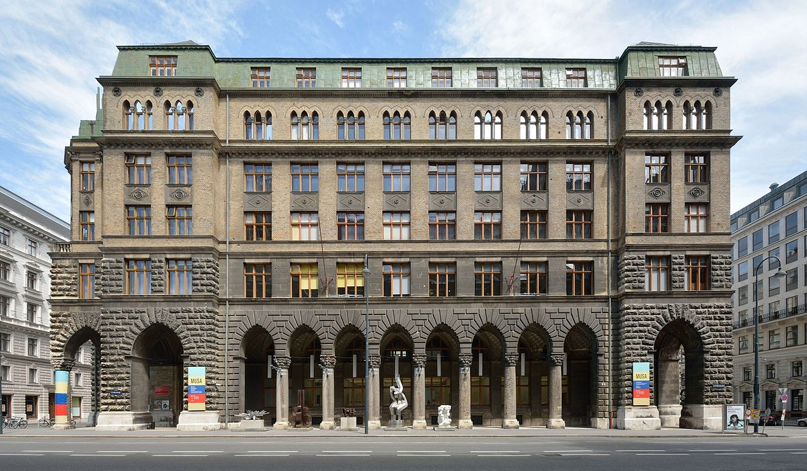

POČETNA |
ISTORIJA |
KULTURA |
POSETITI |
ANKETA |
U Beču postoji 100.000 mesta kao što su pozorišta, bioskopi i muzičke dvorane. Ljubitelji umetnosti imaju priliku da posete više od 100 muzeja i izložbenih prostora, kao i 140 galerija. Bečke kulturne institucije godišnje posete milioni ljudi, a mnogi od njih to rade u 80 gradskih festivala umetnosti. Muzeji u BečuPrirodnjački muzej u BečuNHM Wien je jedan od najvećih muzeja i neuniverzitetskih istraživačkih instituta u Austriji i važan centar izvrsnosti za sva pitanja koja se odnose na prirodne nauke. 39 izložbenih prostorija muzeja prostiru se na 8.460 kvadratnih metara i predstavljaju više od 100.000 objekata. To je dom za 30 miliona objekata koji su dostupni više od 60 naučnika i brojnih gostujućih istraživača koji sprovode temeljna istraživanja u širokom spektru tema vezanih za nauku o ljudima, nauke o zemlji i nauke o životu. Naturhistorisches Museum Wien Muzej istorije umetnosti u BečuKHM Wien je muzej umetnosti u Beču koji se nalazi u reprezentativnoj palati na Ringstraßeu. Njegova kolekcija sadrži dela od starog Egipta do XVIII veka, od čega se posebno vredna kolekcija renesansnih i baroknih slika talijanske, nemačke, flamanske i španske slikarske škole. Glavna kolekcija muzeja je ona Habsburgovaca, i čini je ponajviše portreti i oklopi koje su skupili Ferdinand II. Tirolski i car Rudolf II., te slike koje je skupio nadvojvoda Leopold Wilhelm Austrijski. Pored njih, tu su smeštene i kolekcije staroegipatskih i bliskoistočnih umetnina, starogrčkih i starorimskih umetnina, kolekcija skulptura i dela primenjenih umetnosti, kabineti kovanica i biblioteka.
Bečki muzejGrad Beč ima svoj gradski muzej pod nazivom Bečki muzej. U ovom muzeju, vekovna bečka istorija je prikazana kroz mešavinu umetničkih i istorijskih zbirki. Pored glavne zgrade, muzej ima i nekoliko ogranaka, od kojih su najvažniji MUSA, Hermesvilla u Lainz zoološkom vrtu (Lainzer Tiergarten) i spomenici posvećeni muzičarima zvanim Musiker Gedenkraume. Česte specijalne izložbe stalno prikazuju nešto novo u istoriji Beča. Sve izložbe i kolekcije "Bečkog muzeja" možete posetiti besplatno svake prve nedelje u mesecu. Društveno ugrožene osobe sa izložbom Viener Kulturpass "Hunger auf Kunst und Kultur" mogu je besplatno posetiti kad god požele. Kontakt: Muzej MusaMuzej MUSA startna Galerija Artoteka/Muzej Startgalerie Artothek je kolekcija zbirke savremene umetnosti odseka za kulturu Beča. MUSA trenutno pokriva oko 40.000 predmeta od oko 4.500 autora iz svih oblasti umetnosti. Radove je subvencionisalo Odeljenje za kulturu za ovu namenu od 1951. godine i nudi pregled razvoja bečke umetnosti poslednjih decenija. U MUSA, Gradska vijećnica predstavlja tematske i autoritativne izložbe. Galerija Startgalerie / Startna prikazuje radove mladih bečkih umetnika koji su na početku svoje karijere, a Artothek / Artoteka iznajmljuje grafičke radove privatnim licima u gradu. Do četiri slike do dvanaest meseci mogu se iznajmiti od originalnog fundusa. Sva papirologija je postavljena na prolazu i predstavljena je u aluminijskom okviru sa pleksiglasom. Cena zakupa iznosi 2,5 eura po slici / mjesečno i plaća se unaprijed jer se taj iznos istovremeno zaključuje i osigurava za rad. Prilikom prvog rezervisanja, potrebna je samo službena lična karta i apartman je prihvaćen. Kontakt: Bečka muzejska četvrtMuseumsQuartier Wien je jedan od najvećih svetskih umetničkih areala u kojem je smešteno 60 kulturnih institucija. Posebno je atraktivan za ljubitelje arhitekture, mode i dizajna. Pored velikih muzeja tu se nalaze i male inicijative, udruženja, agencije i redakcije iz oblasti kulture. Deo pod nazivom Q21 u prizemlju baroknog Fischer von Erlach trakta dostupan je za posetioce svakodnevno od 10 do 22h. Unutrašnja dvorišta, cafei i shopovi daju osećaj mira usred gradske buke. Muzejsku četvrt specifičnom čini kombinacija umetnosti i prostora za život i mešavina istorijskih zgrada i savremene muzejske arhitekture. Mnoge manifestacije u dvorištima i pasažima MQ su javno dostupne bez plaćanja ulaza. 
Kontakt: |
POČETNA |
ISTORIJA |
KULTURA |
POSETITI |
ANKETA |